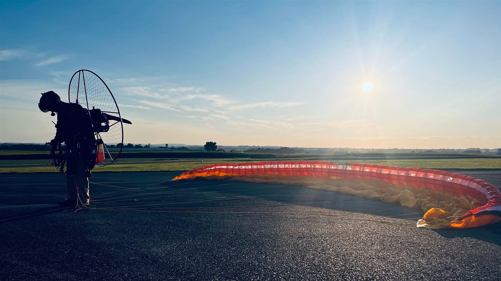
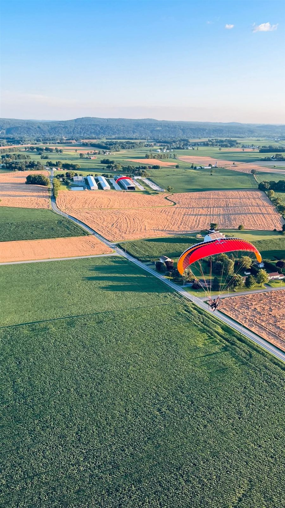
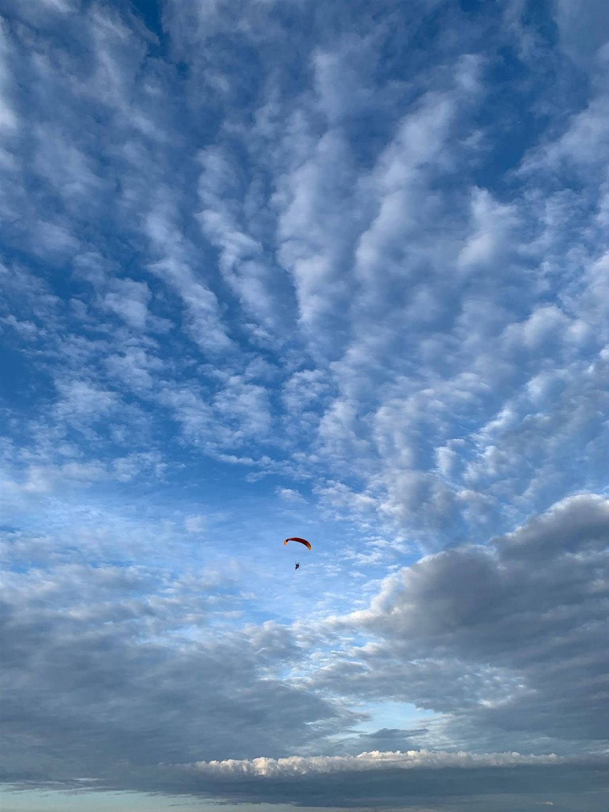
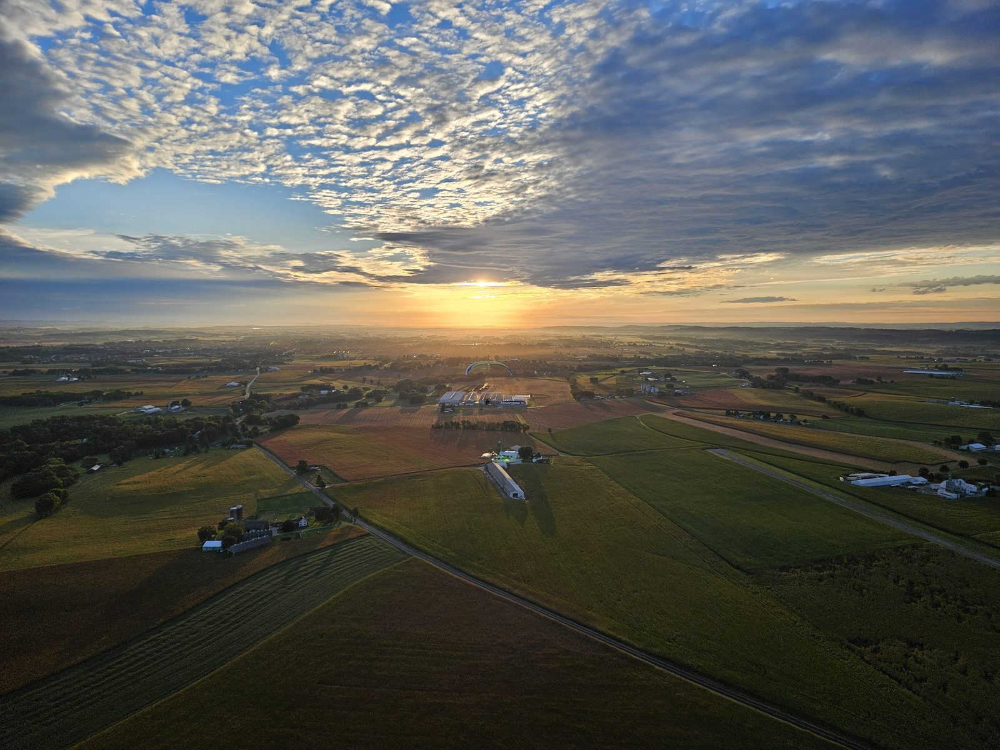
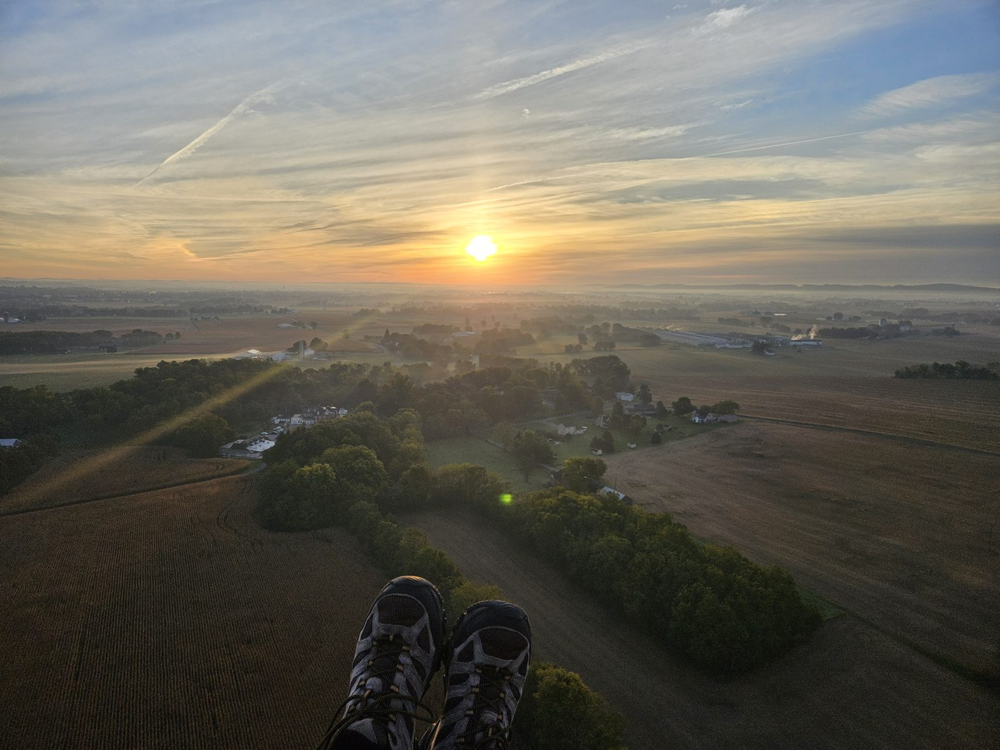
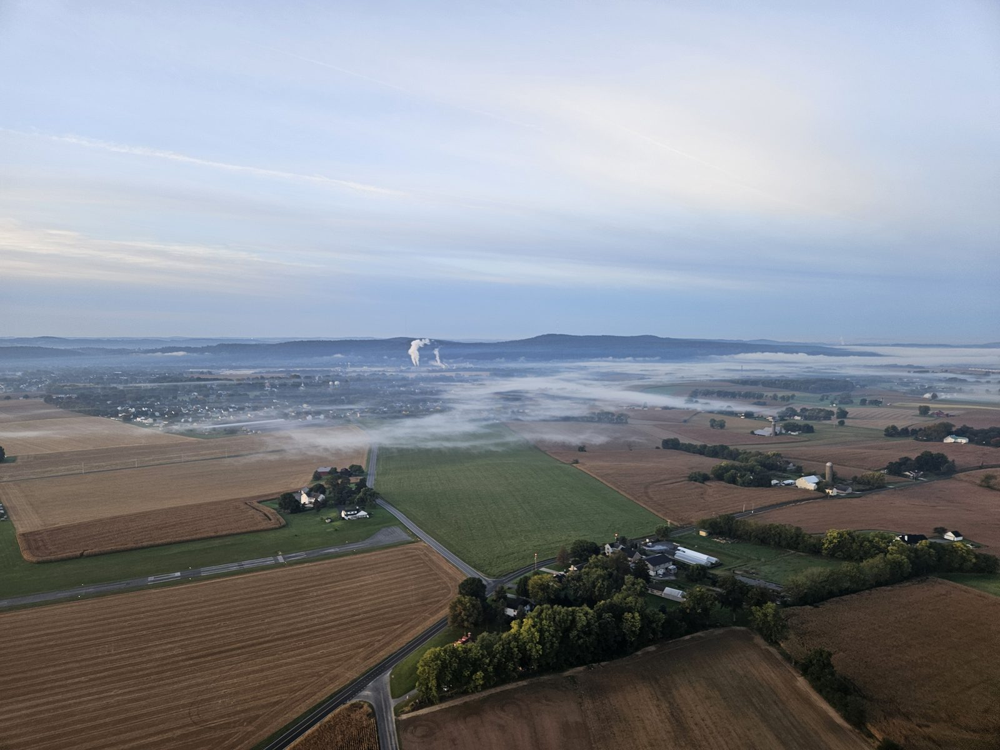
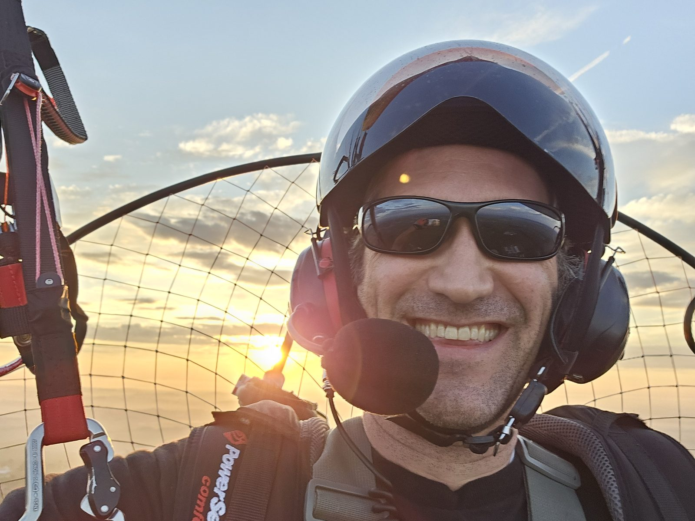
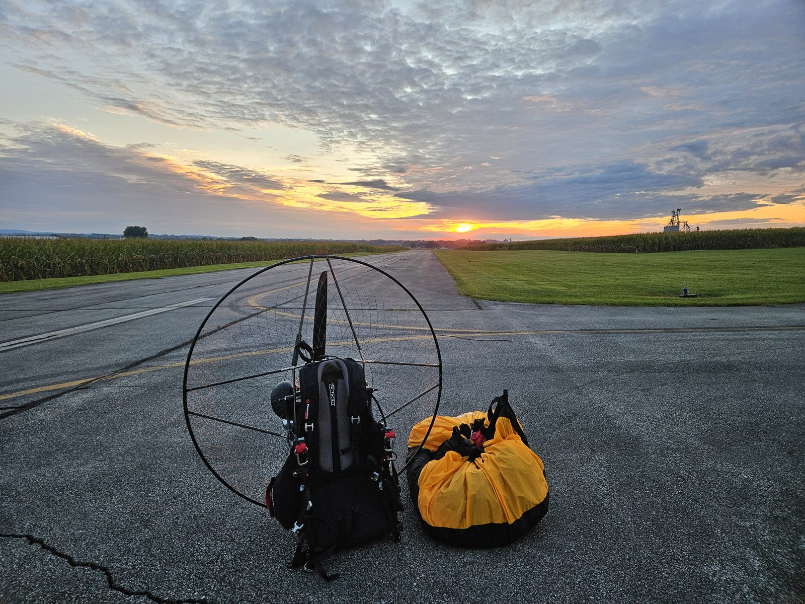
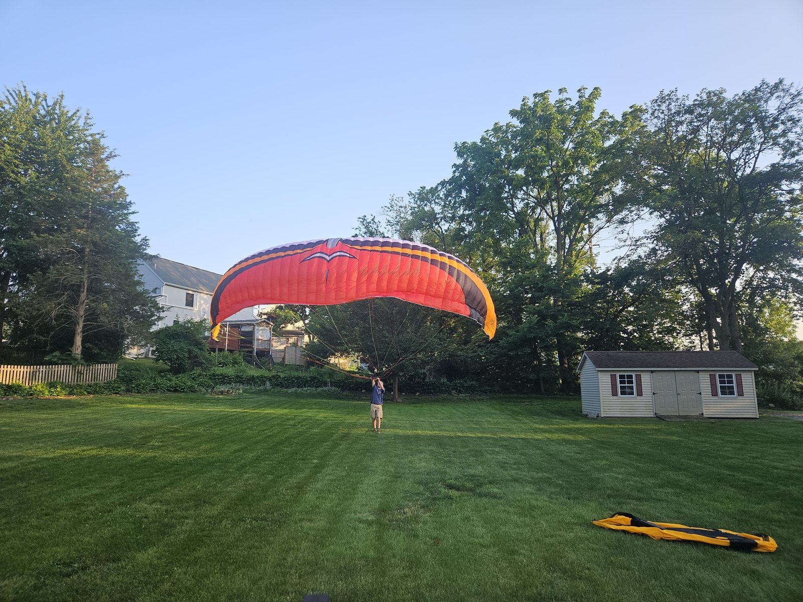
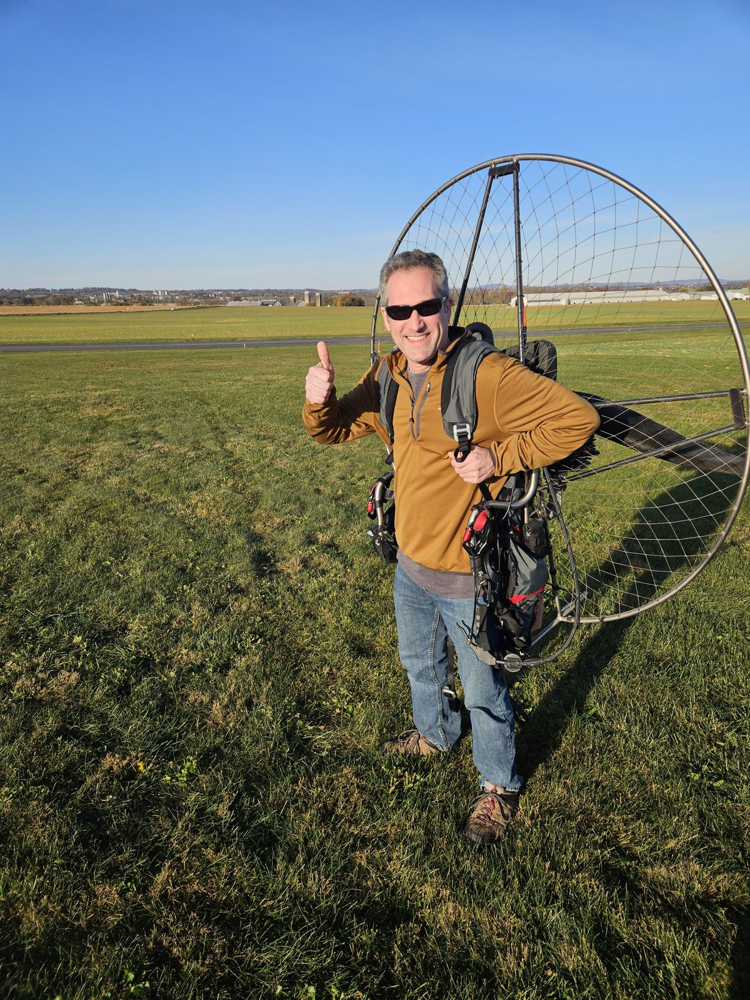

PPG FlyMaster Case
A custom case for my flight instructor's FlyMaster GPS. 3D printed, with heat-staked PEM inserts and a laser-cut acrylic panel.
Read more →// interests
Flying a SkyFox paramotor, and building the gear to go with it.

Placeholder: how I got started, where I trained, and what keeps me coming back to the air.
Projects I've designed and built for flying.
A custom case for my flight instructor's FlyMaster GPS. 3D printed, with heat-staked PEM inserts and a laser-cut acrylic panel.
Read more →Redesigning the failed pull start mount with a carbon fiber support rod that also mounts my GPS and instruments.
Read more →







